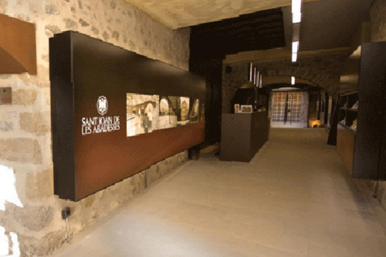

Visita · Sant Joan
T'informaran de tot allò que necessitis saber per descobrir i gaudir d'una bona estada a Sant Joan de les Abadesses i els seus voltants. Visites culturals i guiades. Informació d'exposicions i…